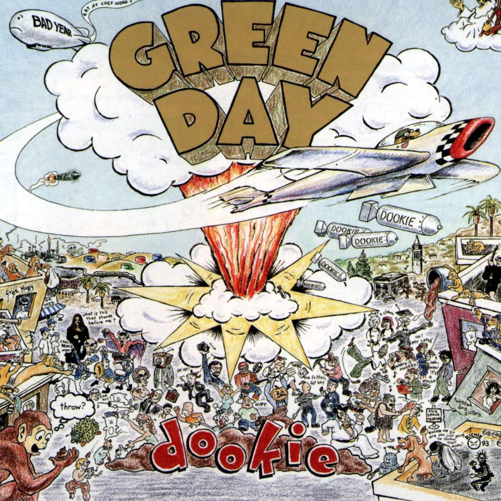
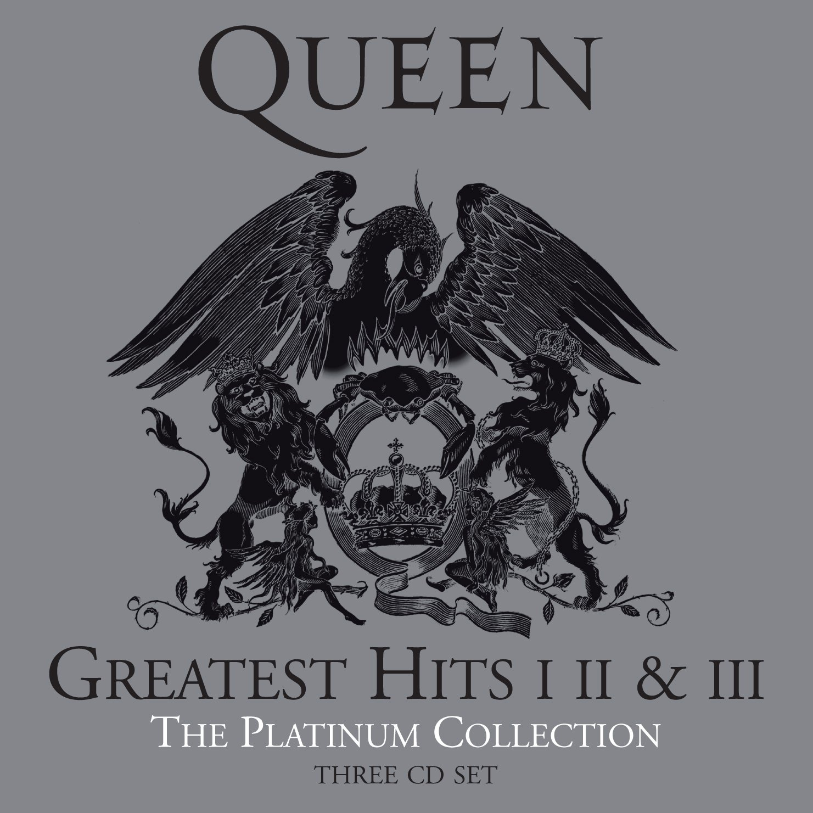

|  | Dookie is the third studio album and major label debut by American rock band Green Day, released on February 1, 1994 by Reprise Records. The band's first collaboration with producer Rob Cavallo, it was recorded in late 1993 at Fantasy Studios in Berkeley, California. Source |
|---|
|  | Greatest Hits is a compilation album by the British rock band Queen, released worldwide on 26 October 1981. The album consisted of Queen's biggest hits since their first chart appearance in 1974 with "Seven Seas of Rhye", up to their 1980 hit "Flash". |
|---|